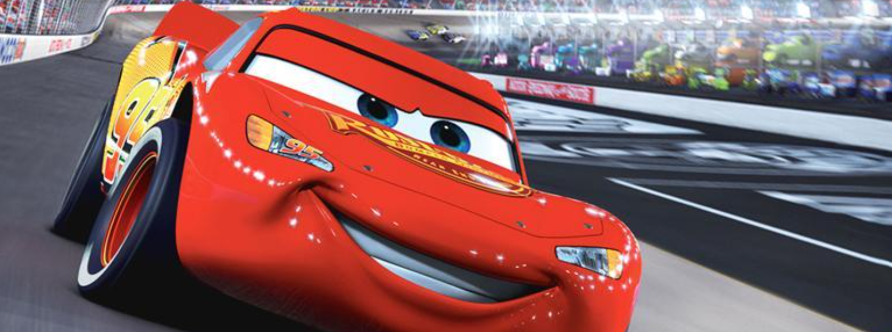

Carros[2][3] (Cars, no original) é um filme de animação digital de 2006 dos gêneros comédia e road movie produzido pela Pixar Animation Studios e lançado pela Walt Disney Pictures. Dirigido e co-escrito por John Lasseter a partir de um roteiro de Dan Fogelman, foi o último filme produzido pela Pixar antes da sua compra pela Disney em janeiro de 2006. Situado em um mundo povoado inteiramente por carros antropomórficos e outros veículos, o filme é estrelado por vozes de Owen Wilson, Paul Newman (em sua atuação final), Bonnie Hunt, Larry the Cable Guy, Tony Shalhoub, Cheech Marin, Michael Wallis, George Carlin, Paul Dooley, Jenifer Lewis, Guido Quaroni, Michael Keaton, Katherine Helmond, John Ratzenberger e Richard Petty. Os pilotos de corrida Dale Earnhardt Jr., Mario Andretti, Michael Schumacher e o colecionador de carros Jay Leno fizeram participações especiais no elenco de dublagem.